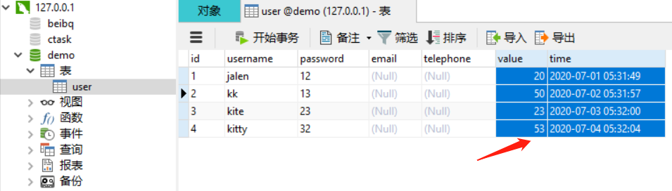
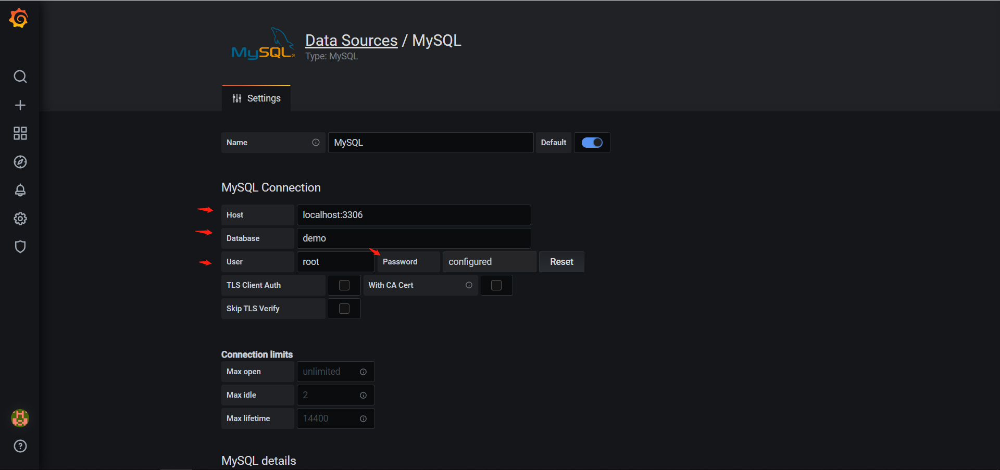
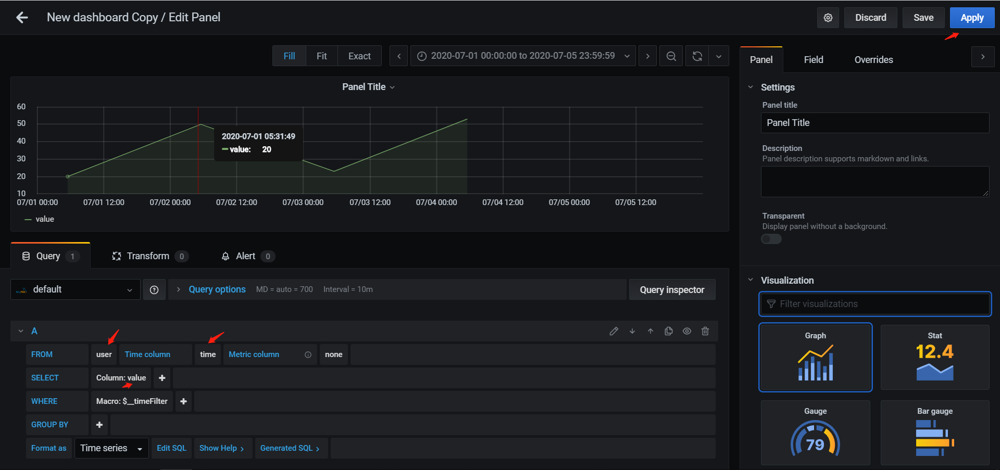
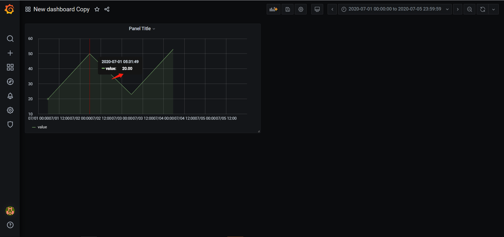

1. 简介
Grafana是一个多平台的开源的可视化 Web应用程序，用来做数据分析并与用户交互。当连接到支持的数据源时，它会为Web提供图表，图形和警报。
它可以通过插件系统扩展。最终用户可以使用交互式查询构建器创建复杂的监视仪表板。
支持数据源有：
1）Time series databases：Prometheus、Graphite、OpenTSDB、InfluxDB
2）Logging & document databases：Loki、Elasticsearch
3）Distributed tracing：Jaeger、Zipkin
4）SQL：MySQL、PostgreSQL、Microsoft SQL Server
5）Cloud：Google Cloud Monitoring、CloudWatch、Azure Monitor、Grafana Cloud
6）Enterprise plugins：Splunk、ServiceNow、Oracle、New Relic、Dynatrace、DataDog、AppDynamics
7）etc
2. 安装（windows为例）
windows下载页面：https://grafana.com/grafana/download?platform=windows
windows安装手册：https://grafana.com/docs/grafana/latest/installation/windows/
安装方式一：下载地址：https://dl.grafana.com/oss/release/grafana-7.1.1.windows-amd64.msi
下载msi安装包，直接鼠标点击进行安装，安装完浏览器打开localhost:3000测试
安装方式二：下载地址：https://dl.grafana.com/oss/release/grafana-7.1.1.windows-amd64.zip
1）下载zip压缩包，点击zip包邮件选择Properties，选择unblock复选框，点击ok。
2）解压到磁盘任意位置，然后进入bin目录，shift+鼠标右键在bin目录下打开powershell
窗口（cmd也可以），然后执行.\grafana-server.exe
3）浏览器输入localhost:3000测试，初始用户名和密码都是admin
4）错误操作：双击执行grafana-server.exe后会弹出cmd窗口打印一堆log，此时在浏览器
访问会一直loading，关闭cmd窗口后浏览器loading失败
附：如果选择zip包安装，并且想要以windows service形式后端运行，可以使用nssm配置，配置如下：
1）进入nssm官方下载页面：https://nssm.cc/download
2）下载压缩包，下载地址：https://nssm.cc/release/nssm-2.24.zip
3）解压，进入win64文件夹，执行.\nssm.exe install grafana（grafana是我自定义的service name，
这个随意），此时弹出窗口，设置grafana-server.exe的路径。
4）打开cmd窗口，输入services.msc打开服务列表，找到grafana服务，右键打开（也可以通过nssm命
令启动服务），然后在浏览器输入localhost:3000测试
5）此时grafana是以windows services形式后台运行
6）端口号修改：把conf目录下sample.ini重命名为custom.ini，修改http_port属性，去掉;注释
3. 配置数据源，以本地mysql为例
1）左侧边栏选择配置Configuration->Data Sources->Mysql，输入DB配置信息
2）左侧边栏选择Dashboards->Manage->New Dashboard->Add new panel，写sql语句然后apply
截图：



